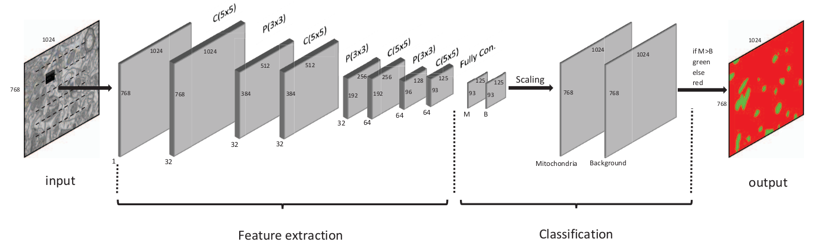

CNN Oztel¶
-
sota_implementations.oztel_2017.cnn_oztel.cnn_oztel(image_shape, activation='relu', lr=0.1, optimizer='sgd')[source]¶ Create the CNN proposed by Oztel et. al.
- Parameters
image_shape (
3D tuple) – Dimensions of the input image.activation (
str, optional) – Keras available activation type.lr (
float, optional) – Learning rate value.optimizer (
str, optional) – Optimizer used to minimize the loss function. Posible options:sgdoradam.
- Returns
model – Model containing the CNN created.
- Return type
Keras model
Here is a picture of the network extracted from the original paper:

{kind=link}
-
sota_implementations.oztel_2017.cnn_oztel.cnn_oztel_test(model, image_shape, activation='relu', lr=0.1, optimizer='sgd')[source]¶ Create the CNN proposed by Oztel et. al for testing, where the full image is fed to the network. It is the same as
cnn_oztel()but changing the last layers to match a semantic segmentation problem and not classification. An 8x upsampling is made, as described by the authors,to match the original image shape.- Parameters
image_shape (
3D tuple) – Dimensions of the input image.activation (
str, optional) – Keras available activation type.lr (
float, optional) – Learning rate value.optimizer (
str, optional) – Optimizer used to minimize the loss function. Posible options:sgdoradam.
- Returns
model – Model containing the CNN created.
- Return type
Keras model